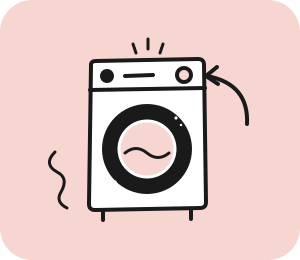
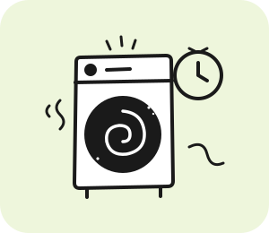
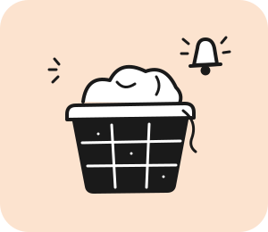

Never forget your laundry again.
In apartment buildings the washer and dryer live in the basement – and then you forget them. wa:sh sets the timer, reminds you in time and tells you when to head down.
Three steps.

1 · StartPick washer or dryer, tap a favourite program – or set a custom time.

2 · RelaxCountdown and progress keep running, on the lock screen too. A reminder 10 minutes before the end.

3 · Down to the basementDone! Collect it, “remind me in 5 minutes” – or straight on to the dryer.
What it does.
- Washer and dryer at onceBoth run independently, each with its own timer.
- Always in viewLive Update on Android 16, Live Activity on iPhone.
- Reminds without naggingAlmost done, done, and a nudge if it’s still down there.
- Home AssistantWasher and dryer as devices – start, collect, automate.
- Light and darkFollows your phone, in English and German.
- PrivateNo account, no ads, no trackers. Open source.
Start right at the machine.
Android
- Open this page in Chrome on your phone.
- Tap “Write to sticker” and hold the sticker to the back of the phone.
- Stick it on the machine. Tap the phone on it – the timer runs.
No Web NFC (e.g. Firefox)? Copy the link and write it as a URL record with any NFC app.
iPhone
iOS only opens web links from stickers. Use the Shortcuts app instead: Automation → NFC → scan the sticker → action “Open URLs” with the link above.
“Program 1/2” are the two favourites you set in the app.